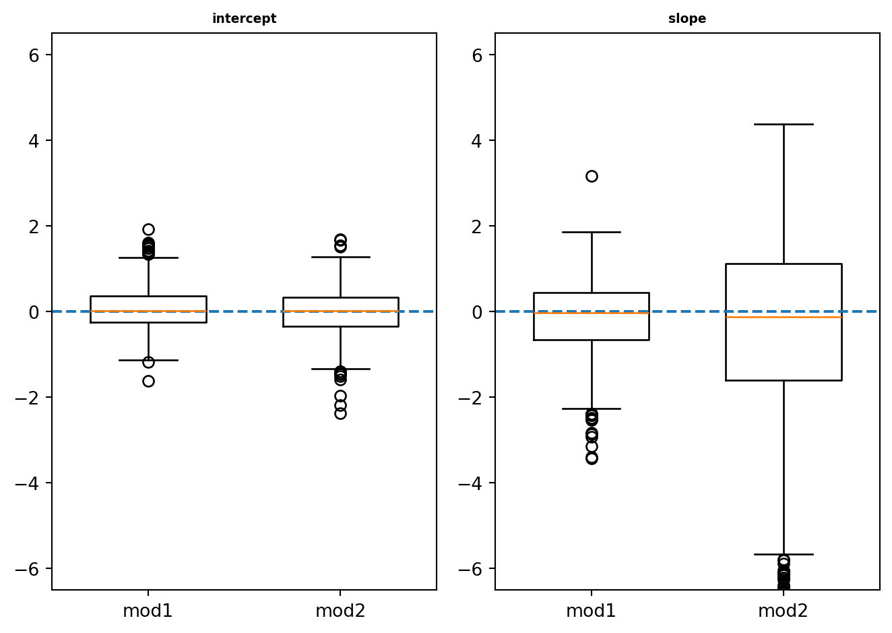
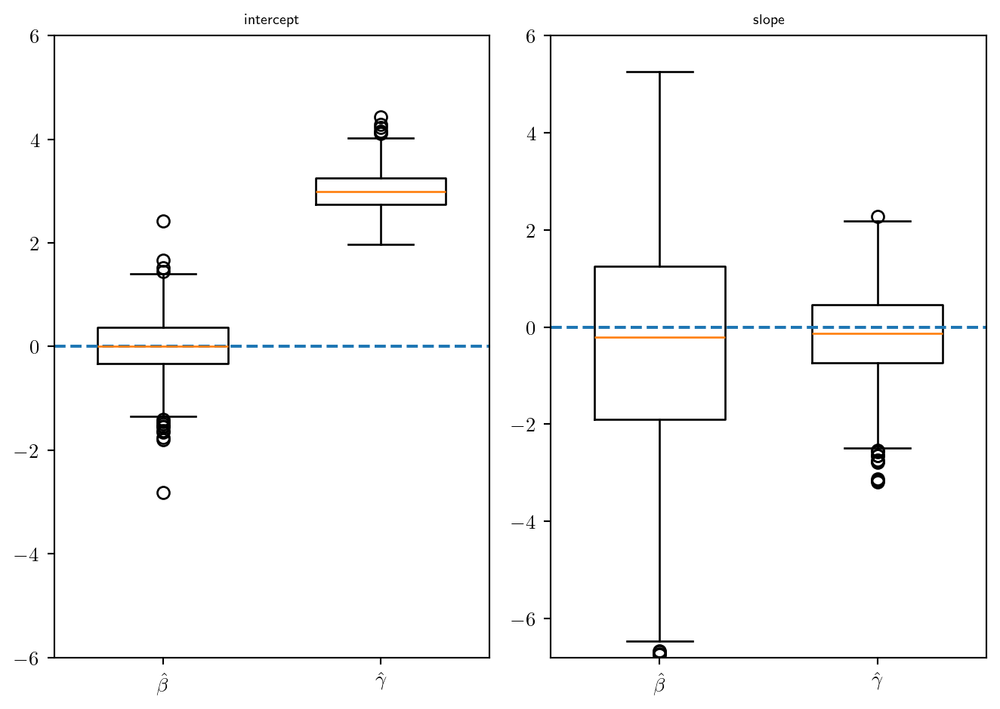
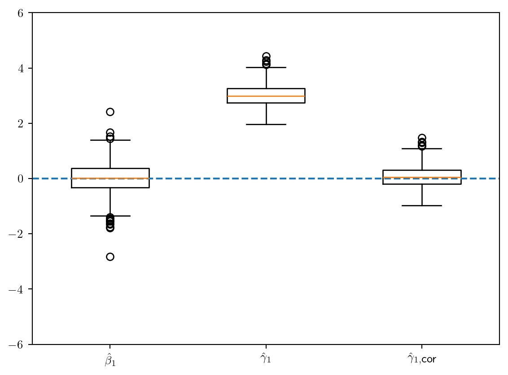
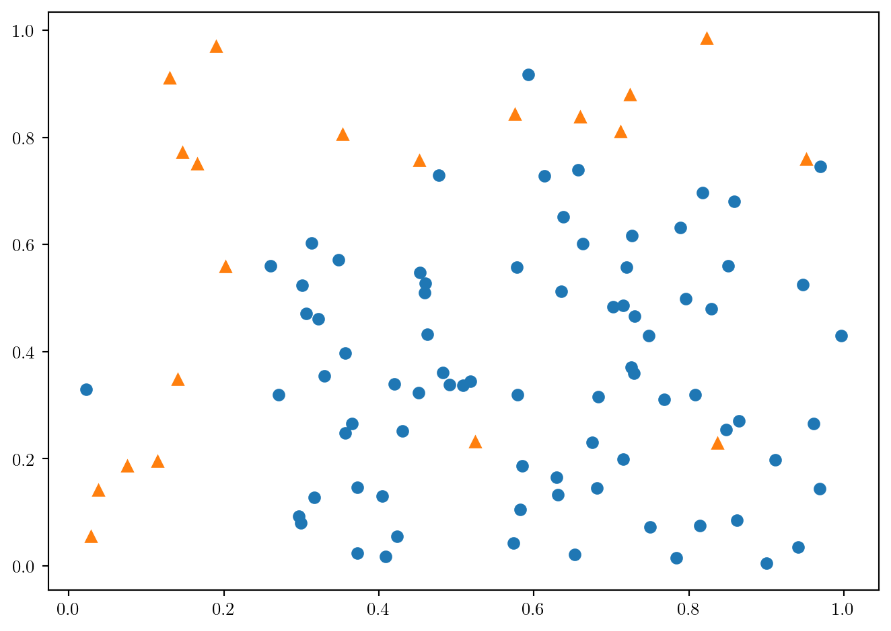
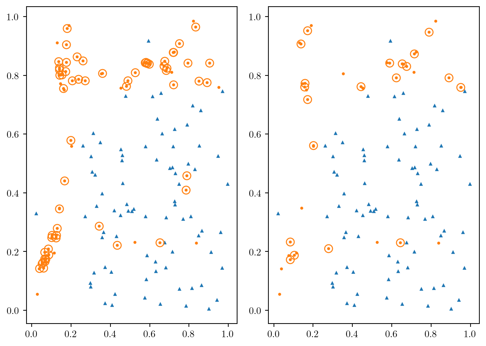
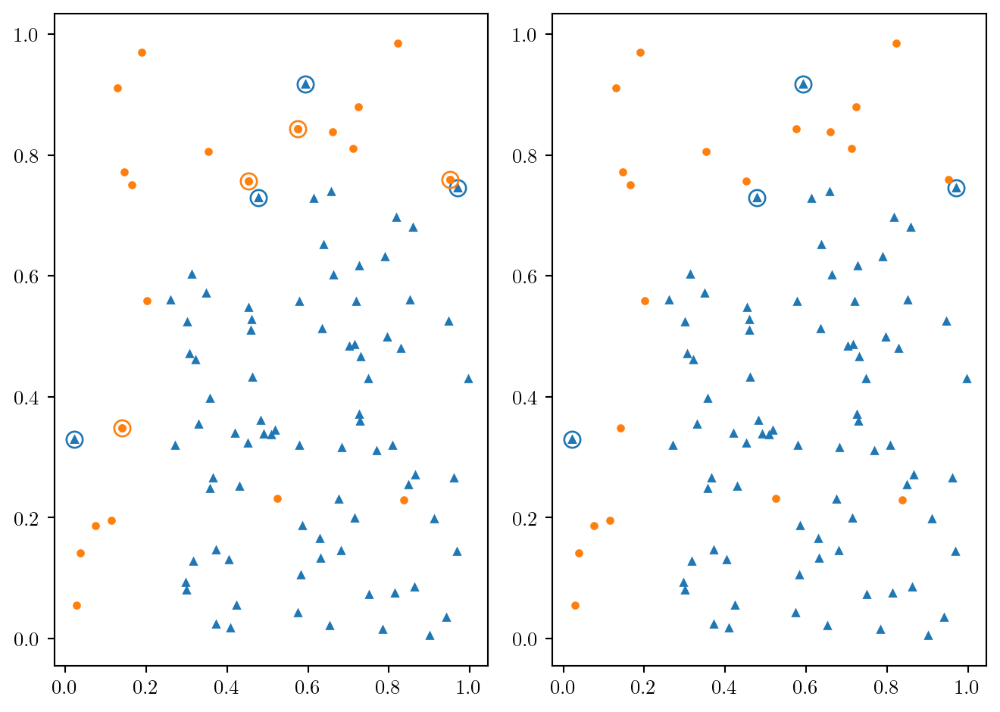
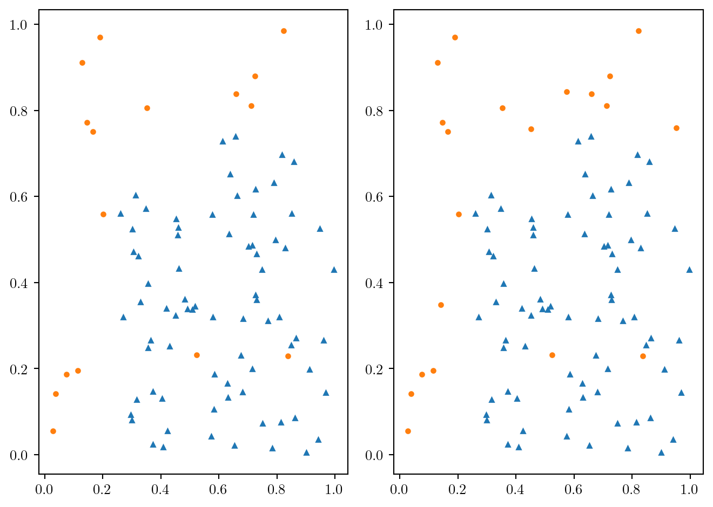

import pandas as pd; import numpy as np
import matplotlib.pyplot as plt
import statsmodels.formula.api as smf
import statsmodels.api as sm
from sklearn.linear_model import LogisticRegression,\
LogisticRegressionCV
from sklearn.pipeline import Pipeline
from sklearn.model_selection import StratifiedKFold
from imblearn.under_sampling import RandomUnderSampler, TomekLinks
from imblearn.over_sampling import RandomOverSampler, SMOTE
from sklearn.metrics import accuracy_score, f1_score, \
balanced_accuracy_score, cohen_kappa_score, roc_auc_score
import sklearn.metrics as sklm16 Données déséquilibrées
Données déséquilibrées et modèle logistique
rng = np.random.default_rng(seed=1234)
n=200
N=1000
beta1_m1 = np.repeat(0.0, N)
beta2_m1 = np.repeat(0.0, N)
beta1_m2 = np.repeat(0.0, N)
beta2_m2 = np.repeat(0.0, N)
for k in range(0,N):
X = rng.uniform(0,1,n)
Z1 = 3 - 6*X
Z2 = -1 - 6*X
p1 = np.exp(Z1)/(1+np.exp(Z1))
p2 = np.exp(Z2)/(1+np.exp(Z2))
Y1 = np.repeat(0,n)
Y2 = np.repeat(0,n)
for i in range(0,n):
Y1[i] = rng.binomial(1, p1[i], size=1)[0]
Y2[i] = rng.binomial(1, p2[i], size=1)[0]
df=pd.DataFrame({"X": X, "Y1": Y1, "Y2": Y2})
mod1 = smf.glm("Y1~1+X", data=df, family=sm.families.Binomial()).fit()
mod2 = smf.glm("Y2~1+X", data=df, family=sm.families.Binomial()).fit()
beta1_m1[k] = mod1.params.Intercept - 3
beta2_m1[k] = mod1.params.X + 6
beta1_m2[k] = mod2.params.Intercept + 1
beta2_m2[k] = mod2.params.X + 6
labels = ["mod1", "mod2"]
fig, (ax1, ax2) = plt.subplots(1,2)
ax1.boxplot([beta1_m1, beta1_m2], tick_labels=labels, widths=0.6)
ax1.set_ylim(-6.5,6.5)
ax1.axhline(0, linestyle='dashed')
ax1.set_title('intercept', {'fontweight': "bold", 'fontsize': 7})
ax2.boxplot([beta2_m1, beta2_m2], tick_labels=labels, widths=0.6)
ax2.set_ylim(-6.5,6.5)
ax2.axhline(0, linestyle='dashed')
ax2.set_title("slope", {'fontweight': "bold", 'fontsize': 7})
fig.tight_layout()
rng = np.random.default_rng(seed=1234)
n=200
N=1000
beta1_m2 = np.repeat(0.0, N)
beta2_m2 = np.repeat(0.0, N)
beta1_m3 = np.repeat(0.0, N)
beta2_m3 = np.repeat(0.0, N)
for k in range(0,N):
X = rng.uniform(0,1,n)
Z2 = -1 - 6*X
p2 = np.exp(Z2)/(1+np.exp(Z2))
Y2 = np.repeat(0,n)
Y3 = np.repeat(0,n)
for i in range(0,n):
s = 0
Y2[i] = rng.binomial(1, p2[i], size=1)[0]
while (s==0):
Y3[i] = rng.binomial(1, p2[i], size=1)[0]
tau = Y3[i]*0.95 + (1-Y3[i])*0.05
s = rng.binomial(1, tau, size=1)[0]
df=pd.DataFrame({"X": X, "Y2": Y2, "Y3": Y3})
mod2 = smf.glm("Y2~1+X", data=df, family=sm.families.Binomial()).fit()
mod3 = smf.glm("Y3~1+X", data=df, family=sm.families.Binomial()).fit()
beta1_m2[k] = mod2.params.Intercept + 1
beta2_m2[k] = mod2.params.X + 6
beta1_m3[k] = mod3.params.Intercept + 1
beta2_m3[k] = mod3.params.X + 6
plt.rcParams.update({"text.usetex": True})
labels = [r"$\hat\beta$", r"$\hat\gamma$"]
fig, (ax1, ax2) = plt.subplots(1,2)
ax1.boxplot([beta1_m2, beta1_m3], tick_labels=labels, widths=0.6)
ax1.set_ylim(-6,6)
ax1.axhline(0, linestyle='dashed')
ax1.set_title('intercept', {'fontweight': "bold", 'fontsize': 7})
ax2.boxplot([beta2_m2, beta2_m3], tick_labels=labels, widths=0.6)
ax2.set_ylim(-6.8,6)
ax2.axhline(0, linestyle='dashed')
ax2.set_title("slope", {'fontweight': "bold", 'fontsize': 7})
fig.tight_layout()
plt.rcParams.update({"text.usetex": True})
beta1_m3cor = beta1_m3 - np.log(0.95/0.05)
labels = [r"$\hat\beta_1$", r"$\hat\gamma_1$", r"$\hat\gamma_{1,\mbox{cor}}$"]
fig, ax1 = plt.subplots(1,1)
ax1.boxplot([beta1_m2, beta1_m3, beta1_m3cor], tick_labels=labels, widths=0.5)
ax1.set_ylim(-6,6)
ax1.axhline(0, linestyle='dashed')
df = pd.DataFrame({"MALADE": [208, 42], "NON_MALADE": [48, 202], "FUMEUR": ["OUI", "NON"]})
model = smf.glm("MALADE+NON_MALADE~FUMEUR", data=df, family=sm.families.Binomial()).fit()
round(model.params,3)Intercept -1.571
FUMEUR[T.OUI] 3.037
dtype: float64newX=pd.DataFrame({"FUMEUR": ["OUI", "NON"]})
model.predict(newX)0 0.812500
1 0.172131
dtype: float64beta1_cor = model.params.iloc[0] - np.log(0.995/0.005)
beta2 = model.params.iloc[1]
round((np.exp(beta1_cor+beta2)/(1+np.exp(beta1_cor+beta2))),3)0.021round((np.exp(beta1_cor)/(1+np.exp(beta1_cor))),3)0.001r = 1
rus = RandomUnderSampler(sampling_strategy=r, random_state=0)
X_r, y_r = rus.fit_resample(X, y)
dfr = pd.DataFrame(X_r).assign(y_r = y_r)mod=smf.glm("y_r~...",data=dfr,family=sm.families.Binomial()).fit()n1 = df.Y.value_counts()[1]
gamma = model.params
gamma[0] - log(n1*r)Stratégies pour données déséquilibrées
Quelques méthodes de rééquilibrages
df = pd.read_csv('../donnees/dd_ex_ech_des1.csv', header=0, sep=';')
df.Y.value_counts()
y = df.Y
X = df.loc[:,["X1", "X2"]]fig = plt.figure()
plt.plot(df.loc[df.Y==0, "X1"], df.loc[df.Y==0, "X2"], 'o', df.loc[df.Y==1, "X1"], df.loc[df.Y==1, "X2"], '^')
fig.tight_layout()
ros1 = RandomOverSampler(random_state=0)
Xreech1, yreech1 = ros1.fit_resample(X, y)
print(yreech1.value_counts())Y
0 80
1 80
Name: count, dtype: int64ros2 = RandomOverSampler(random_state=0, sampling_strategy={0: 80, 1: 40})
Xreech2, yreech2 = ros2.fit_resample(X, y)
print(yreech2.value_counts())Y
0 80
1 40
Name: count, dtype: int64over1 = pd.DataFrame(Xreech1)
over1["Y"] = yreech1smote1 = SMOTE(random_state=42, k_neighbors=4)
Xreech1, yreech1 = smote1.fit_resample(X, y)
print(yreech1.value_counts())Y
0 80
1 80
Name: count, dtype: int64smote2 = SMOTE(random_state=423, k_neighbors=4, \
sampling_strategy={0: 80, 1: 40})
Xreech2, yreech2 = smote2.fit_resample(X, y)
print(yreech2.value_counts())Y
0 80
1 40
Name: count, dtype: int64df1 = Xreech1.assign(Yreech = yreech1)
tmp = df1.merge(df, how="outer", on=['X1', 'X2'])
nouv1 = tmp.loc[tmp.Y.isna(), :]
nouv1.Yreech.value_counts()
df2 = Xreech2.assign(Yreech = yreech2)
tmp = df2.merge(df, how="outer", on=['X1', 'X2'])
nouv2 = tmp.loc[tmp.Y.isna(), :]
nouv2.Yreech.value_counts()
plt.rc("lines", markersize=2)
coul = ["C0", "C1"]
mark = ["^", "o"]
fig, (ax1, ax2) = plt.subplots(1,2)
for i in range(0,2):
ax1.plot(df.loc[df.Y==i, "X1"], df.loc[df.Y==i, "X2"], marker=mark[i], c=coul[i], ls='')
ax1.plot(nouv1.loc[nouv1.Yreech==i, "X1"], nouv1.loc[nouv1.Yreech==i, "X2"], marker=mark[i], c=coul[i], ls='')
ax1.plot(nouv1.loc[nouv1.Yreech==i, "X1"], nouv1.loc[nouv1.Yreech==i, "X2"],\
marker = mark[1], ms=8, mec=coul[i], mfc='#ffffff00', ls='')
ax2.plot(df.loc[df.Y==i, "X1"], df.loc[df.Y==i, "X2"], marker=mark[i], c=coul[i], ls='')
ax2.plot(nouv2.loc[nouv2.Yreech==i, "X1"], nouv2.loc[nouv2.Yreech==i, "X2"], marker=mark[i], c=coul[i], ls='')
ax2.plot(nouv2.loc[nouv2.Yreech==i, "X1"], nouv2.loc[nouv2.Yreech==i, "X2"],\
marker = mark[1], ms=8, mec=coul[i], mfc="#ffffff00", ls='')
fig.tight_layout()
y = df.Y
X = df.loc[:,["X1", "X2"]]
rus1 = RandomUnderSampler(random_state=38)
Xreech1, yreech1 = rus1.fit_resample(X, y)
print(yreech1.value_counts())Y
0 20
1 20
Name: count, dtype: int64rus2 = RandomUnderSampler(random_state=38, sampling_strategy={0: 40, 1: 20})
Xreech2, yreech2 = rus2.fit_resample(X, y)
print(yreech2.value_counts())Y
0 40
1 20
Name: count, dtype: int64tl1 = TomekLinks(sampling_strategy='all')
Xreech1, yreech1 = tl1.fit_resample(X, y)
print(yreech1.value_counts())Y
0 76
1 16
Name: count, dtype: int64tl2 = TomekLinks(sampling_strategy='majority')
Xreech2, yreech2 = tl2.fit_resample(X, y)
print(yreech2.value_counts())Y
0 76
1 20
Name: count, dtype: int64df1 = Xreech1.assign(Yreech = yreech1)
tmp = df.merge(df1, how="outer", on=['X1', 'X2'])
nouv1 = tmp.loc[tmp.Yreech.isna(), :]
nouv1.Y.value_counts()
df2 = Xreech2.assign(Yreech = yreech2)
tmp = df.merge(df2, how="outer", on=['X1', 'X2'])
nouv2 = tmp.loc[tmp.Yreech.isna(), :]
nouv2.Y.value_counts()
plt.rc("lines", markersize=3)
coul = ["C0", "C1"]
mark = ["^", "o"]
fig, (ax1, ax2) = plt.subplots(1,2)
for i in range(0,2):
ax1.plot(df.loc[df.Y==i, "X1"], df.loc[df.Y==i, "X2"], marker=mark[i], c=coul[i], ls='')
ax1.plot(nouv1.loc[nouv1.Y==i, "X1"], nouv1.loc[nouv1.Y==i, "X2"], marker=mark[i], c=coul[i], ls='')
ax1.plot(nouv1.loc[nouv1.Y==i, "X1"], nouv1.loc[nouv1.Y==i, "X2"],\
marker = mark[1], ms=8, mec=coul[i], mfc='#ffffff00', ls='')
ax2.plot(df.loc[df.Y==i, "X1"], df.loc[df.Y==i, "X2"], marker=mark[i], c=coul[i], ls='')
ax2.plot(nouv2.loc[nouv2.Y==i, "X1"], nouv2.loc[nouv2.Y==i, "X2"], marker=mark[i], c=coul[i], ls='')
ax2.plot(nouv2.loc[nouv2.Y==i, "X1"], nouv2.loc[nouv2.Y==i, "X2"],\
marker = mark[1], ms=8, mec=coul[i], mfc="#ffffff00", ls='')
fig.tight_layout()
coul = ["C0", "C1"]
mark = ["^", "o"]
fig, (ax1, ax2) = plt.subplots(1,2)
for i in range(0,2):
ax1.plot(df1.loc[df1.Yreech==i, "X1"], df1.loc[df1.Yreech==i, "X2"], marker=mark[i], c=coul[i], ls='')
ax2.plot(df2.loc[df2.Yreech==i, "X1"], df2.loc[df2.Yreech==i, "X2"], marker=mark[i], c=coul[i], ls='')
fig.tight_layout()
Critères pour données déséquilibrées
df = pd.read_csv("../donnees/donnees_dondesequilib.csv", header=0, sep=';')
print(pd.crosstab(index=df.Y, columns=df.P1))P1 0 1
Y
0 468 0
1 31 1print(pd.crosstab(index=df.Y, columns=df.P2))P2 0 1
Y
0 407 61
1 4 28from sklearn.metrics import accuracy_score, balanced_accuracy_score, f1_score, cohen_kappa_score
print(np.round(accuracy_score(df.Y, df.P2), 3))
print(np.round(balanced_accuracy_score(df.Y, df.P2), 3))
print(np.round(f1_score(df.Y, df.P2), 3))
print(np.round(cohen_kappa_score(df.Y, df.P2), 3))0.87
0.872
0.463
0.407Choisir un algortihme de rééquilibrage
ad = pd.read_csv("../donnees/ad_data.txt", header=None ,sep=",",\
na_values = "?", skipinitialspace=True, keep_default_na=True)
noms = ["X" + str(i+1) for i in range(ad.shape[1] - 1)]
noms.append("Y")
ad.columns = noms
ad1 = ad.dropna(axis=1)
ad1.loc[:,"Y"] = ad1["Y"].astype("category").cat.rename_categories({"nonad.": 0, "ad.": 1})
X = ad1.iloc[:,:-1]
y = pd.to_numeric(ad1.iloc[:,-1])
ad1.Y.value_counts()Y
0 2820
1 459
Name: count, dtype: int64from sklearn.preprocessing import StandardScaler
def grille(X, y, type = "lasso", ng=400):
"""
X: tableau des var explicatives au format sklearn
y: variable a expliquer au format sklearn
type: "lasso" ou "ridge" ou "enet"
ng: nombre de valeur dans le chemin
retourne la grille
"""
scalerX = StandardScaler().fit(X)
Xcr= scalerX.transform(X)
l0 = np.abs(Xcr.transpose().dot((y - y.mean()))).max()/X.shape[0]
llc = np.linspace(0,-4,ng)
ll = l0*10**llc
if type=="lasso":
Cs = 1/ 0.9/ X.shape[0] / (l0*10**(llc))
elif type=="ridge":
Cs = 1/ 0.9/ X.shape[0] / ((l0*10**(llc)) * 100)
elif type=="enet":
Cs = 1/ 0.9/ X.shape[0] / ((l0*10**(llc)) * 2)
return Csskf = StratifiedKFold(n_splits=10, shuffle=True, random_state=0)
RES = pd.DataFrame(pd.to_numeric(ad1.iloc[:,ad1.shape[1]-1]))
for i in ["Logistic", "Lasso", "Ridge"]:
for j in ["brut", "ros", "smote", "rus", "tomek"]:
RES = RES.assign(**{i + "_" + j: 0})for app_index, val_index in skf.split(X,y):
Xapp = X.iloc[app_index,:-1]
yapp = y.iloc[app_index]
Xval = X.iloc[val_index,:-1]
# grille
Cs_lasso = grille(Xapp, yapp, "lasso")
Cs_ridge = grille(Xapp, yapp, "ridge")
# instanciation
cr = StandardScaler()
logistic = LogisticRegression(penalty=None, solver="newton-cholesky" )
lassocv = LogisticRegressionCV(cv=10, penalty="l1", n_jobs=10, Cs=Cs_lasso, solver="saga", max_iter=2000)
ridgecv = LogisticRegressionCV(cv=10, penalty="l2", n_jobs=10, Cs=Cs_ridge, max_iter=1000)
pipe_logistic = Pipeline(steps=[("cr", cr), ("logistic", logistic)])
pipe_lassocv = Pipeline(steps=[("cr", cr), ("lassocv", lassocv)])
pipe_ridgecv = Pipeline(steps=[("cr", cr), ("ridgecv", ridgecv)])
# fit brut
pipe_logistic.fit(Xapp, yapp)
pipe_lassocv.fit(Xapp, yapp)
pipe_ridgecv.fit(Xapp, yapp)
# prediction
RES.loc[val_index,"Logistic_brut"] = pipe_logistic.predict(Xval).ravel()
RES.loc[val_index,"Lasso_brut"] = pipe_lassocv.predict(Xval).ravel()
RES.loc[val_index,"Ridge_brut"] = pipe_ridgecv.predict(Xval).ravel()for app_index, val_index in skf.split(X,y):
Xapp = X.iloc[app_index,:-1]
yapp = y.iloc[app_index]
Xval = X.iloc[val_index,:-1]
## RandomOverSampler
ros1 = RandomOverSampler(random_state=123)
Xreech, yreech = ros1.fit_resample(Xapp, yapp)
# grille
Cs_lasso = grille(Xreech, yreech, "lasso")
Cs_ridge = grille(Xreech, yreech, "ridge")
# instanciation
cr = StandardScaler()
logistic = LogisticRegression(penalty=None, solver="newton-cholesky")
lassocv = LogisticRegressionCV(cv=10, penalty="l1", n_jobs=10, Cs=Cs_lasso, solver="saga", max_iter=2000)
ridgecv = LogisticRegressionCV(cv=10, penalty="l2", n_jobs=10, Cs=Cs_ridge, max_iter=1000)
pipe_logistic = Pipeline(steps=[("cr", cr), ("logistic", logistic)])
pipe_lassocv = Pipeline(steps=[("cr", cr), ("lassocv", lassocv)])
pipe_ridgecv = Pipeline(steps=[("cr", cr), ("ridgecv", ridgecv)])
# fit
pipe_logistic.fit(Xreech, yreech)
pipe_lassocv.fit(Xapp, yapp)
pipe_ridgecv.fit(Xreech, yreech)
# prediction
RES.loc[val_index,"Logistic_ros"] = pipe_logistic.predict(Xval).ravel()
RES.loc[val_index,"Lasso_ros"] = pipe_lassocv.predict(Xval).ravel()
RES.loc[val_index,"Ridge_ros"] = pipe_ridgecv.predict(Xval).ravel()
## Smote
sm = RandomOverSampler(random_state=123)
Xreech, yreech = sm.fit_resample(Xapp, yapp)
# grille
Cs_lasso = grille(Xreech, yreech, "lasso")
Cs_ridge = grille(Xreech, yreech, "ridge")
# instanciation
cr = StandardScaler()
logistic = LogisticRegression(penalty=None, solver="newton-cholesky")
lassocv = LogisticRegressionCV(cv=10, penalty="l1", n_jobs=10, Cs=Cs_lasso, solver="saga", max_iter=2000)
ridgecv = LogisticRegressionCV(cv=10, penalty="l2", n_jobs=10, Cs=Cs_ridge, max_iter=1000)
pipe_logistic = Pipeline(steps=[("cr", cr), ("logistic", logistic)])
pipe_lassocv = Pipeline(steps=[("cr", cr), ("lassocv", lassocv)])
pipe_ridgecv = Pipeline(steps=[("cr", cr), ("ridgecv", ridgecv)])
# fit
pipe_logistic.fit(Xreech, yreech)
pipe_lassocv.fit(Xapp, yapp)
pipe_ridgecv.fit(Xreech, yreech)
# prediction
RES.loc[val_index,"Logistic_smote"] = pipe_logistic.predict(Xval).ravel()
RES.loc[val_index,"Lasso_smote"] = pipe_lassocv.predict(Xval).ravel()
RES.loc[val_index,"Ridge_smote"] = pipe_ridgecv.predict(Xval).ravel()for app_index, val_index in skf.split(X,y):
Xapp = X.iloc[app_index,:-1]
yapp = y.iloc[app_index]
Xval = X.iloc[val_index,:-1]
## RandomUnderSampler
rus1 = RandomUnderSampler(random_state=123)
Xreech, yreech = rus1.fit_resample(Xapp, yapp)
# grille
Cs_lasso = grille(Xreech, yreech, "lasso")
Cs_ridge = grille(Xreech, yreech, "ridge")
# instanciation
cr = StandardScaler()
logistic = LogisticRegression(penalty=None,solver="newton-cholesky" )
lassocv = LogisticRegressionCV(cv=10, penalty="l1", n_jobs=10, Cs=Cs_lasso, solver="saga", max_iter=2000)
ridgecv = LogisticRegressionCV(cv=10, penalty="l2", n_jobs=10, Cs=Cs_ridge, max_iter=1000)
pipe_logistic = Pipeline(steps=[("cr", cr), ("logistic", logistic)])
pipe_lassocv = Pipeline(steps=[("cr", cr), ("lassocv", lassocv)])
pipe_ridgecv = Pipeline(steps=[("cr", cr), ("ridgecv", ridgecv)])
# fit
pipe_logistic.fit(Xreech, yreech)
pipe_lassocv.fit(Xapp, yapp)
pipe_ridgecv.fit(Xreech, yreech)
# prediction
RES.loc[val_index,"Logistic_rus"] = pipe_logistic.predict(Xval).ravel()
RES.loc[val_index,"Lasso_rus"] = pipe_lassocv.predict(Xval).ravel()
RES.loc[val_index,"Ridge_rus"] = pipe_ridgecv.predict(Xval).ravel()
## Tomek
tl = TomekLinks(sampling_strategy='all')
Xreech, yreech = tl.fit_resample(Xapp, yapp)
# grille
Cs_lasso = grille(Xreech, yreech, "lasso")
Cs_ridge = grille(Xreech, yreech, "ridge")
# instanciation
cr = StandardScaler()
logistic = LogisticRegression(penalty=None, solver="newton-cholesky")
lassocv = LogisticRegressionCV(cv=10, penalty="l1", n_jobs=10, Cs=Cs_lasso, solver="saga", max_iter=2000)
ridgecv = LogisticRegressionCV(cv=10, penalty="l2", n_jobs=10, Cs=Cs_ridge, max_iter=1000)
pipe_logistic = Pipeline(steps=[("cr", cr), ("logistic", logistic)])
pipe_lassocv = Pipeline(steps=[("cr", cr), ("lassocv", lassocv)])
pipe_ridgecv = Pipeline(steps=[("cr", cr), ("ridgecv", ridgecv)])
# fit
pipe_logistic.fit(Xreech, yreech)
pipe_lassocv.fit(Xapp, yapp)
pipe_ridgecv.fit(Xreech, yreech)
# prediction
RES.loc[val_index,"Logistic_tomek"] = pipe_logistic.predict(Xval).ravel()
RES.loc[val_index,"Lasso_tomek"] = pipe_lassocv.predict(Xval).ravel()
RES.loc[val_index,"Ridge_tomek"] = pipe_ridgecv.predict(Xval).ravel()auc = pd.Series(0.0, index=RES.columns[1:])
for i in range(auc.shape[0]):
auc.iloc[i] = sklm.roc_auc_score(RES.Y, RES.iloc[:,i+1])
round(auc,3)Logistic_brut 0.914
Logistic_ros 0.905
Logistic_smote 0.905
Logistic_rus 0.890
Logistic_tomek 0.917
Lasso_brut 0.907
Lasso_ros 0.687
Lasso_smote 0.687
Lasso_rus 0.690
Lasso_tomek 0.908
Ridge_brut 0.912
Ridge_ros 0.924
Ridge_smote 0.924
Ridge_rus 0.919
Ridge_tomek 0.911
dtype: float64acc = pd.Series(0.0, index=RES.columns[1:])
s = 0.5
for i in range(acc.shape[0]):
acc.iloc[i] = 1-sklm.zero_one_loss(RES.Y, RES.iloc[:,i+1]>s)
round(acc,3)Logistic_brut 0.956
Logistic_ros 0.949
Logistic_smote 0.949
Logistic_rus 0.892
Logistic_tomek 0.958
Lasso_brut 0.970
Lasso_ros 0.912
Lasso_smote 0.912
Lasso_rus 0.912
Lasso_tomek 0.970
Ridge_brut 0.971
Ridge_ros 0.958
Ridge_smote 0.958
Ridge_rus 0.947
Ridge_tomek 0.970
dtype: float64bal = pd.Series(0.0, index=RES.columns[1:])
s = 0.5
for i in range(bal.shape[0]):
bal.iloc[i] = sklm.balanced_accuracy_score(RES.Y, RES.iloc[:,i+1]>s)
round(bal,3)Logistic_brut 0.914
Logistic_ros 0.905
Logistic_smote 0.905
Logistic_rus 0.890
Logistic_tomek 0.917
Lasso_brut 0.907
Lasso_ros 0.687
Lasso_smote 0.687
Lasso_rus 0.690
Lasso_tomek 0.908
Ridge_brut 0.912
Ridge_ros 0.924
Ridge_smote 0.924
Ridge_rus 0.919
Ridge_tomek 0.911
dtype: float64f1s = pd.Series(0.0, index=RES.columns[1:])
s = 0.5
for i in range(f1s.shape[0]):
f1s.iloc[i] = sklm.f1_score(RES.Y, RES.iloc[:,i+1]>s)
round(f1s,3)Logistic_brut 0.845
Logistic_ros 0.822
Logistic_smote 0.822
Logistic_rus 0.697
Logistic_tomek 0.852
Lasso_brut 0.883
Lasso_ros 0.543
Lasso_smote 0.543
Lasso_rus 0.549
Lasso_tomek 0.885
Ridge_brut 0.889
Ridge_ros 0.854
Ridge_smote 0.854
Ridge_rus 0.822
Ridge_tomek 0.887
dtype: float64kappa_scores = pd.Series(0.0, index=RES.columns[1:])
s = 0.5
for i in range(kappa_scores.shape[0]):
kappa_scores.iloc[i] = sklm.cohen_kappa_score(RES.Y, RES.iloc[:,i+1] > s)
round(kappa_scores, 3)Logistic_brut 0.820
Logistic_ros 0.792
Logistic_smote 0.792
Logistic_rus 0.635
Logistic_tomek 0.828
Lasso_brut 0.865
Lasso_ros 0.504
Lasso_smote 0.504
Lasso_rus 0.510
Lasso_tomek 0.868
Ridge_brut 0.873
Ridge_ros 0.829
Ridge_smote 0.829
Ridge_rus 0.791
Ridge_tomek 0.870
dtype: float64